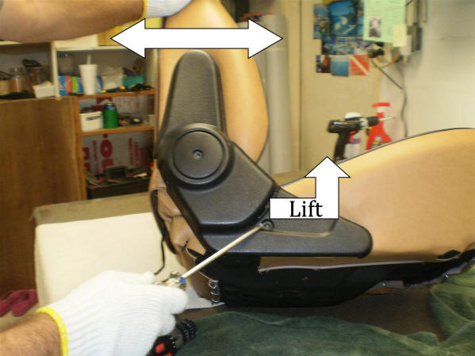
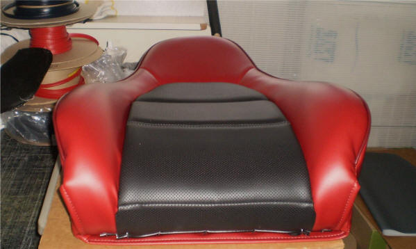

When It's Time to Replace Your Seats
- The seats have ripped - In most cases, replacing rather than just repairing delivers better long-term results
- The seats don't match your car's character - If the interior color or styling doesn't match your exterior, updating the seats completes the whole look
- The seats don't reflect your standards - Don't let outdated upholstery distract from all your hard work on the rest of the car
Why Put Miata Seats in a European Roadster?

Safety First
The Miata seat is a High-Back design, meaning it incorporates a head restraint (headrest is simply short for head restraint).
Original European roadster seats often provide poor shoulder support and no neck or head restraint, leaving you vulnerable in rear-end collisions.
Proper Head & Shoulder Support
A person 5'10" sitting in a Miata seat has their head and shoulders fully supported. The integrated headrest protects against whiplash injury in rear-end impacts.
The Insurance Institute for Highway Safety (IIHS) emphasizes the importance of proper head restraints in preventing whiplash injuries.
Why Choose the Miata Seat?
Affordable & Easy to Find
Miata seats are inexpensive and readily available at salvage yards nationwide. Call your local wrecking yard and ask for 1990-1997 Mazda Miata seats - MrMikes kits fit all those years.
Modern Recline Feature
Miata seats have a modern, easy-to-use recline mechanism for adjustable comfort.
Side Bolster Support
Miata seats have supportive side bolsters that keep you in place during spirited driving.
Easy to Adapt

Suppliers make Miata seat adapters for specific cars, or you can fabricate your own mounting brackets.
Why Do-It-Yourself?
- If you want it done right, do it yourself - it can be challenging to find a vendor who will take as much care with your car as you will
- Replacing your seat upholstery can be accomplished over a weekend - you don't have to be an upholstery expert
- Because you're providing the labor, using a DIY kit is a budget-friendly alternative to hiring an upholstery shop
Why Specialty Vehicle Owners Trust MrMikes
- Experience customizing auto upholstery since 1984 - we've perfected our patterns and materials to last
- Proud reputation for quality products and customer service - many of our seats have proven to be show-winning
- Each kit is custom made to the owner's request - from two-tone to trim colors and custom logos, you can design seats that are truly your own